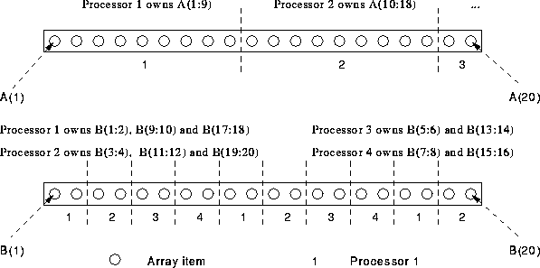
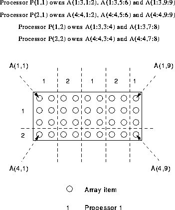

There are two further distribution methods:
These are similar to one another. In both cases a block of elements of a specific size is given to each processor in turn. The size of block, m, is specified in parentheses after the distribution method. The only real difference between the two methods is that BLOCK(m) implies that each processor must get at most one block of elements whereas CYCLIC(m) implies that each processor may get more than one block of elements.
BLOCK(m) implies that after giving each processor m elements, all the array should have been distributed; if there are any elements left over an error will have occurred. CYCLIC(m) distribution assigns a block of m elements to each processor and then returns to the first and gives a second block to each processor and so on, until all the array elements have been used up.
CYCLIC(m) retains characteristics of both BLOCK and CYCLIC distributions: in theory, blocks of m elements are grouped together which is useful for neighbourhood calculations and the cyclic distribution policy should promote a reasonable degree of load balancing. Unfortunately, possible benefits are often outweighed by the extra work involved in keeping track of where each array element is resident. The elements owned by a specific processor when using regular BLOCK, CYCLIC or BLOCK(m) distributions can be represented internally be the compiler as a single subscript-triplet, however, CYCLIC(m) requires that a union of subscript-triplets be used. This factor will add extra complexity to the compiled program as the executable code will contain an extra level of loop nesting compared to other distributions.
BLOCK(m) is useful if BLOCK distribution is desired but only over a subset of processors.
For example,
REAL, DIMENSION(20) :: A, B !HPF$ PROCESSORS, DIMENSION(4) :: P !HPF$ DISTRIBUTE A(BLOCK(9)) ONTO P !HPF$ DISTRIBUTE B(CYCLIC(2)) ONTO P
The examples demonstrates how BLOCK(m) has ensured that the first two processors get the majority of the array A, and how CYCLIC(m) distribution has assigned a number of discrete blocks of elements of B to each processor (see Figure 23).

Figure 23: Visualisation of BLOCK(m) and CYCLIC(m) Distribution
Consider the following 2D array A,
REAL, DIMENSION(4,9) :: A !HPF$ PROCESSORS, DIMENSION(2) :: P !HPF$ DISTRIBUTE (BLOCK(3),CYCLIC(2)) ONTO P :: A
This demonstrates 2D distribution. The principal is exactly the same as before. Dimension one (going down the columns) is distributed BLOCK(3) and the second dimension is CYCLIC(2).
Ownership,
It can be seen that the CYCLIC(2) distribution in the second dimension means that the ``local set'' (the set of elements local to a specific processor) has to be stored as a union of subscript-triplets. This can be visualised as in Figure 24.

Figure 24: Visualisation of 2D BLOCK(m) and CYCLIC(m)
Distribution
Note that BLOCK(m) must `use up' all the elements.